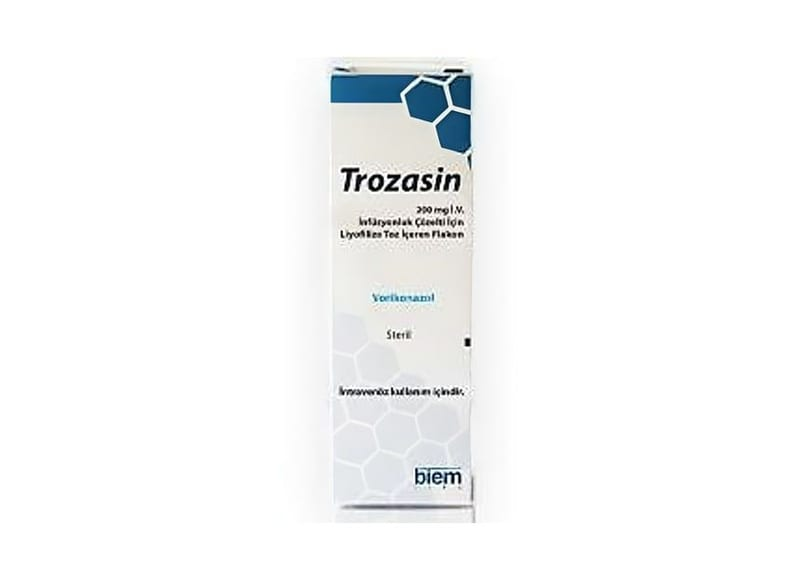

Trozasin 200 mg IV İnfüzyonluk Çözelti İçin Liyofilize Toz İçeren Flakon, 1 Adet

Ne için kullanılır
KT · Bölüm 1TROZASİN 200 mg IV infüzyonluk çözelti için liyofilize toz, 200 mg vorikonazol içermektedir. Tek kullanımlık cam flakonlarda mevcuttur. Sulandırıldıktan sonra her bir mililitrede 10 mg vorikonazol bulunur. TROZASİN, mantar enfeksiyonlarına karşı kullanılan (antifungal) triazol adı verilen bir ilaç grubuna dahildir. Bu ilaçlar çok çeşitli mantar hastalıklarını tedavi etmede kullanılırlar. TROZASİN bu enfeksiyonlara neden olan mantarları öldürerek veya büyümelerini durdurarak etki göstermektedir. TROZASİN (2 yaşın üstündeki çocuklarda ve yetişkinlerde); • Aspergillus, Scedosporium, Fusarium ve flukonazole dirençli Candida’nın neden olduğu ciddi mantar enfeksiyonları tedavisinde • Beyaz kan hücre sayısı normal olan hastalarda kandaki mantar enfeksiyonunun (kandidemi) tedavisinde kullanılır. Bu ilaç yalnız bir doktor gözetiminde kullanılmalıdır. TROZASİN esas olarak hastalığı ciddi olanlarda kullanılır.